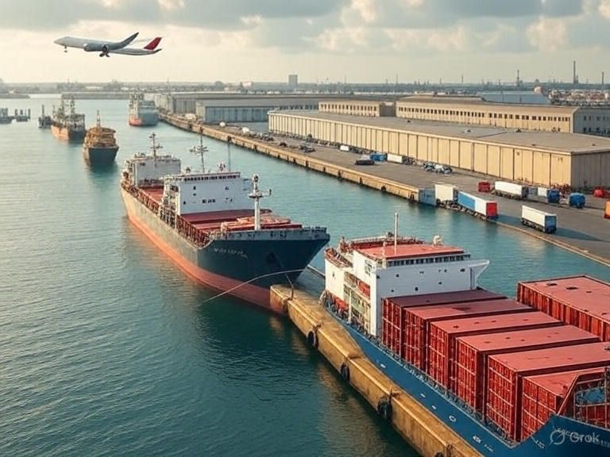
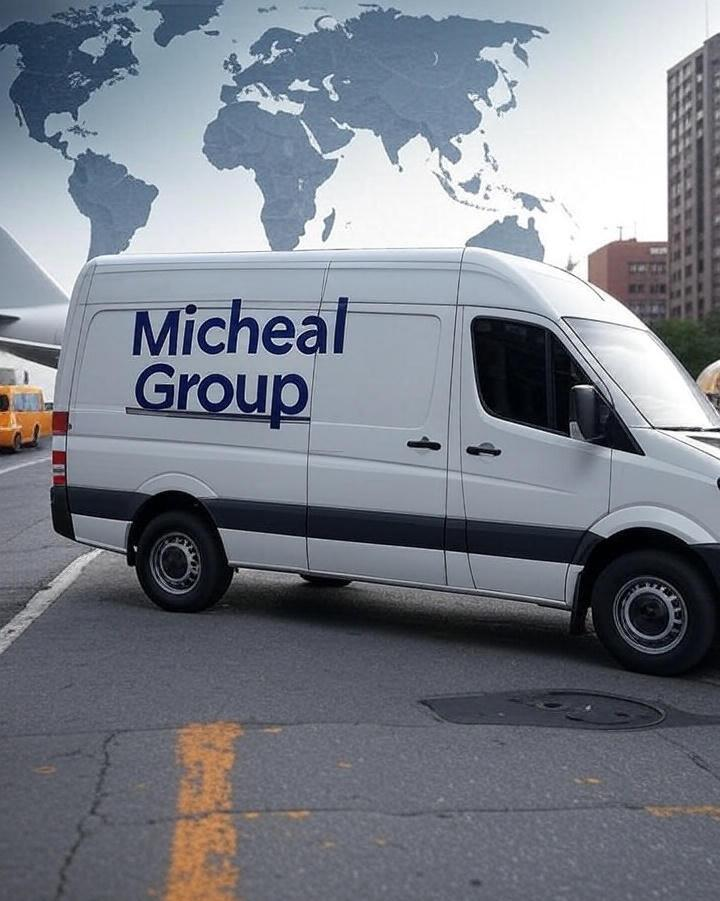

MG (Micheal Group) is your trusted partner in global transport and logistics solutions. With a legacy of excellence spanning decades, we specialize in seamless freight management across sea, air, and land. Our commitment to innovation and reliability has made us a leader in the industry, serving clients worldwide with unmatched efficiency. From cargo ships navigating international waters to airplanes delivering urgent shipments, MG is built on a foundation of trust, precision, and customer satisfaction. Explore how we can elevate your supply chain today.
At MG (Micheal Group), we offer an extensive range of services tailored to meet your logistics needs.
Our fleet includes state-of-the-art cargo ships, a robust network of trucks and vans for road transport, and advanced air freight capabilities.
Whether it’s warehousing, last-mile delivery, or integrated supply chain management, our team ensures every detail is handled with expertise.
We pride ourselves on providing end-to-end solutions that adapt to the dynamic demands of global trade, making us the go-to choice for businesses of all sizes.
MG (Micheal Group) connects the world with a presence in key ports, airports, and distribution hubs across the globe. Our strategic locations allow us to offer localized expertise while maintaining a global perspective. From bustling maritime terminals to busy airfields, our operations are designed to optimize delivery times and reduce costs. With a deep understanding of international regulations and market trends, MG ensures your goods move smoothly, no matter the destination.
Innovation drives MG (Micheal Group) forward. We leverage cutting-edge technology to track shipments in real-time, streamline warehouse operations, and enhance customer communication. Our advanced systems provide transparency and control, allowing you to monitor your cargo from pickup to delivery. By integrating smart logistics tools, MG stays ahead in a competitive industry, delivering efficiency and peace of mind to every client we serve.
At MG (Micheal Group), we are dedicated to sustainable logistics practices. We optimize routes to reduce fuel consumption, invest in eco-friendly vehicles, and support green initiatives in our warehouses and ports. Our commitment extends to minimizing our carbon footprint while maintaining high service standards. Partner with MG to support a greener future without compromising on speed or reliability.
